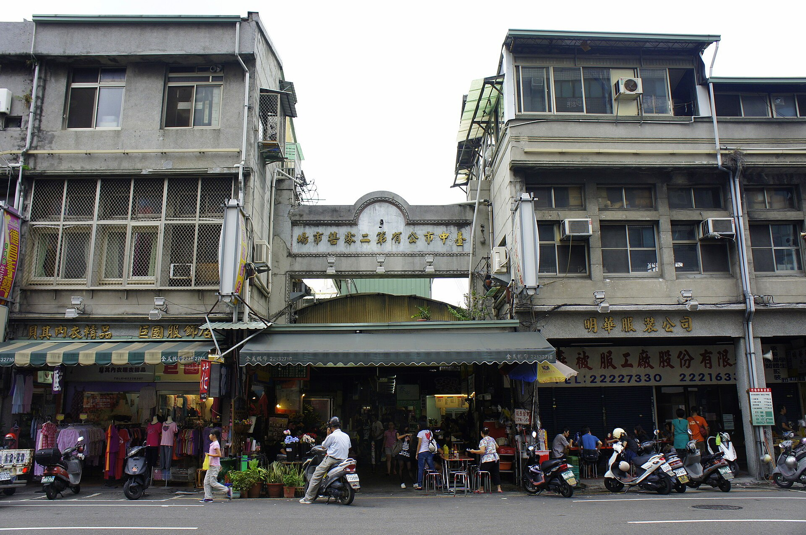
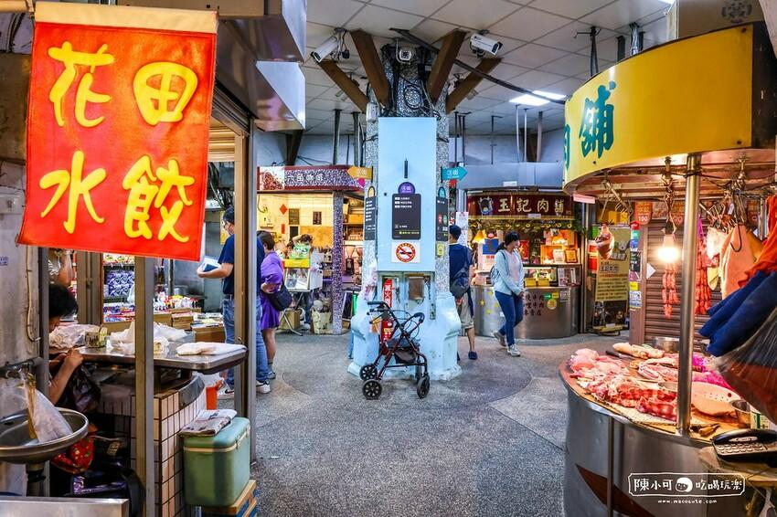

ABOUT THE MARKET
認識台中第二市場
台中第二市場是台中具有代表性的傳統市場之一。 這裡不只有各式各樣的傳統小吃，也保留了老市場的生活氣息。 走進市場，可以感受到在地居民日常生活的熱鬧與人情味。

DISCOVER MORE
探索市場的不同面貌
從歷史、美食到交通資訊，規劃一趟市場小旅行。
「一座市場，收藏著一座城市的生活記憶。」
Discover the Local Life of Taichung
ABOUT THE MARKET
台中第二市場是台中具有代表性的傳統市場之一。 這裡不只有各式各樣的傳統小吃，也保留了老市場的生活氣息。 走進市場，可以感受到在地居民日常生活的熱鬧與人情味。

DISCOVER MORE
從歷史、美食到交通資訊，規劃一趟市場小旅行。
「一座市場，收藏著一座城市的生活記憶。」
Discover the Local Life of Taichung